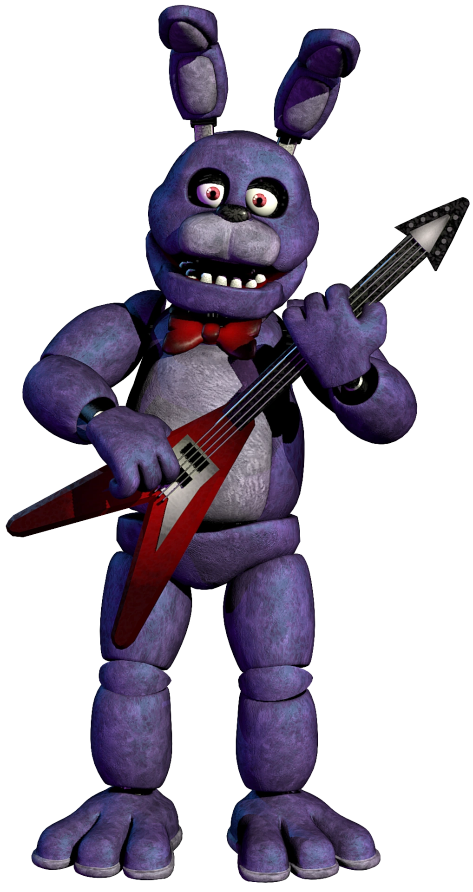

William B. Afton was born on June 15, 1945, and grew up in Hurricane, Utah. From an early age, he showed an interest in engineering and entertainment, which later influenced his career in the family entertainment and restaurant industry.
William made friends with Edwin Martinelli, a fellow innovator who shared his new prototype for a mascot called a Mimic. Together, they explored new ways to bring joy and wonder to families through entertainment and explored the reality with this new mimic technology.
With a strong entrepreneurial spirit, William co-founded a successful restaurant chain that combined delicious dining experiences with cutting-edge animatronic performances. His vision was to create a place where families could gather, celebrate, and enjoy immersive storytelling through advanced robotics.
Edwin Martinelli was an engineer and robotics expert who played a key role in the development of animatronic entertainment. Born in 1948, in the high streets of Chicago, he grew up with a fascination for artificial intelligence and mechanical automation. His work in robotics led him to develop an advanced AI known as "The Mimic", which allowed for animatronic behavior to learn and replicate human actions or be programmed to act a certain way.
In the late 1970s, Edwin partnered with William Afton to co-found an entertainment company that brought animatronic and family fun together. They introduced a new generation of mascots that combined advanced AI with captivating performances. Their creations became the foundation of a family-friendly restaurant experience that entertained visitors and led to the company’s success.
| Animatronic | Description | Image |
|---|---|---|
| Freddy Fivebear | The charismatic leader, known for his cheerful performances and friendly demeanor. | |
| Bonnie LeBonbon | A skilled guitarist with a love for music and a playful attitude. |  |
| Foxy Freaker | A pirate-themed fox that loves adventurous tales and high-energy performances. |  |
| Cheeky Chica | A cheerful and energetic character, known for her love of food and cooking-themed songs. |